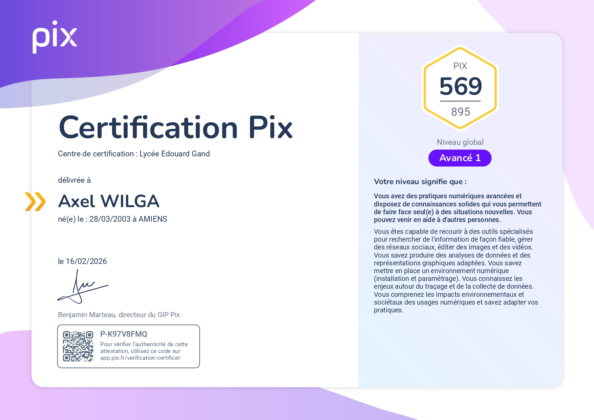

✅ Acquis · Certification Pix
Ce niveau signifie : Pratiques numériques avancées, autonomie face à des situations nouvelles, capacité à aider des tiers. Maîtrise de la recherche d'information fiable, gestion des réseaux sociaux, édition image/vidéo, analyse de données, installation et paramétrage d'environnement numérique, enjeux de traçage, impacts environnementaux et sociétaux du numérique.
app.pix.fr/verification-certificat
📅 Délivrée le 16/02/2026 · Lycée Edouard Gand · Benjamin Marteau (GIP Pix)

Document certifié Pix délivré par le GIP Pix. Cliquez sur "Ouvrir le PDF original" pour vérifier l'authenticité.
⚙️ En cours de formation
Tests d'intrusion, sécurité réseau, méthodologies offensives/défensives.
Cybermalveillance, gestion des risques, sécurité des systèmes d'information.
Syntaxe Python, structures de contrôle, fonctions, préparation PCEP.
🔮 Prévisions · Certifications ciblées
Concepts cloud, disponibilité, sécurité, conformité, tarification Azure.
Services AWS de base, modèles économiques, sécurité et conformité.